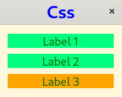

(update:2026/4/30)
gtkmm4では、ラベルやボタンなどのウィジットの外観のデザインはCSS(Cuscading Style Sheet)によって変更することができます。具体的にはCSSファイルにウィジットの色や形、文字のフォントや大きさおよび線の種類や太さを指定します。
Gtk::CssProviderの参照ポインタを宣言します。
ウィジットのインスタンスで使用されるクラスの名前を指定します。CSSクラス名は、先頭に"."を付加します。
void Gtk::Widget::add_css_class( const Glib::ustring & css_class )
ウィジットのインスタンスの名前を指定します。CSSウィジット名は、先頭に"#"を付加します。
void Gtk::Widget::set_name( const Glib::ustring & name )
Gtk::CssProviderの参照ポインタを生成します。
static Glib::RefPtr<CssProvider> Gtk::CssProvider::create()
Gdk::displayにstyleproviderを追加します。
スタイルシートを読み込んだ時に、CSSクラスの表現にエラーがあった場合に表示するメッセージについて定義しています。
スタイルシートをスタイルプロバイダーに読み込みます。
void Gtk::CssProvider::load_from_path( const Glib::ustring & path )
表示するウインドウの背景色、枠線などの外観を指定することができます。
例．window { background-color: green; }
タイトルバーに表示される文字のフォント、大きさおよび色などを指定することができます。
例．label { font-size: 20px; }
CSSクラスでは、ウィジットの色や枠線などの外観のデザインを指定することができます。CSSクラス名の先頭に"."を付加します。
例．.m-label_A { color: yellow; }
CSSウィジットでは、ウィジットの色や枠線などの外観のデザインを指定することができます。CSSウィジット名の先頭に"#"を付加します。
例．#m-label_B { color: blue; }
#include <gtkmm.h>
#include <iostream>
#include <gtkmm/cssprovider.h>
class MyWindow : public Gtk::Window
{
public:
MyWindow();
virtual ~MyWindow() = default;
private:
Gtk::Label m_label1, m_label2, m_label3;
protected:
// signal handler:
static void on_parsing_error( const Glib::RefPtr<const Gtk::CssSection>& sec, const Glib::Error& err );
// child widgets:
Gtk::Box m_box;
// 1.Gtk::CssProviderの宣言
Glib::RefPtr<Gtk::CssProvider> m_refCssProvider;
};
MyWindow::MyWindow()
: m_box( Gtk::Orientation::VERTICAL )
{
set_title( "Css" );
set_child( m_box );
m_box.set_margin( 15 );
m_box.set_spacing( 10 );
m_label1.set_text( "Label 1" );
// 2 Cssクラス名の指定
m_label1.add_css_class( "m-label_A" );
m_box.append( m_label1 );
m_label2.set_text( "Label 2" );
m_label2.add_css_class( "m-label_A" );
m_box.append( m_label2 );
m_label3.set_text( "Label 3" );
// 3 ウィジット名の指定
m_label3.set_name( "m-label_B" );
m_box.append( m_label3 );
// Load extra CSS file
// 4.Gtk::CssProviderの参照ポインタの生成
m_refCssProvider = Gtk::CssProvider::create();
// 5.ディスプレイにスタイルプロバイダーを追加
Gtk::StyleContext::add_provider_for_display( get_display(), m_refCssProvider,
GTK_STYLE_PROVIDER_PRIORITY_APPLICATION );
// 6.エラーメッセージ
m_refCssProvider->signal_parsing_error().connect(
[]( const Glib::RefPtr<const Gtk::CssSection>& sec, const Glib::Error& err )
{ on_parsing_error( sec, err ); }
);
// 7.スタイルシートの読み込み
m_refCssProvider->load_from_path( "style.css" );
}
void MyWindow::on_parsing_error( const Glib::RefPtr<const Gtk::CssSection>& sec, const Glib::Error& err )
{
Gtk::CssLocation s_location, e_location;
std::cerr << "on_parsing_error(): " << err.what() << std::endl;
if ( sec ) {
Glib::RefPtr<const Gio::File> file = sec->get_file();
if ( file ) {
std::cerr << " URI = " << file->get_uri() << std::endl;
}
s_location = sec->get_start_location();
e_location = sec->get_end_location();
std::cerr << " start : " << s_location.get_lines()+1
<< ", end : " << e_location.get_lines()+1 << std::endl;
std::cerr << " s_pos : " << s_location.get_line_chars()
<< ", e_pos : " << e_location.get_line_chars() << std::endl;
}
}
int main( int argc, char* argv[] )
{
auto app = Gtk::Application::create( "gtkmm4.example" );
return app->make_window_and_run<MyWindow>( argc, argv );
}
/* ウィンドウ */
window {
background-color: Cornsilk;
}
/* タイトルバー */
label {
color: blue;
font-size: 30px;
}
/* Cssクラス*/
.m-label_A {
background-color: springgreen;
color: darkgreen;
font-size: 20px;
}
/* ウィジット */
#m-label_B {
background-color: orange;
color: darkgreen;
font-size: 20px;
}

| Previous | Top | Next |
| Copyright (c) Henrry Yamm Project All Rights Reserved. |
|---|